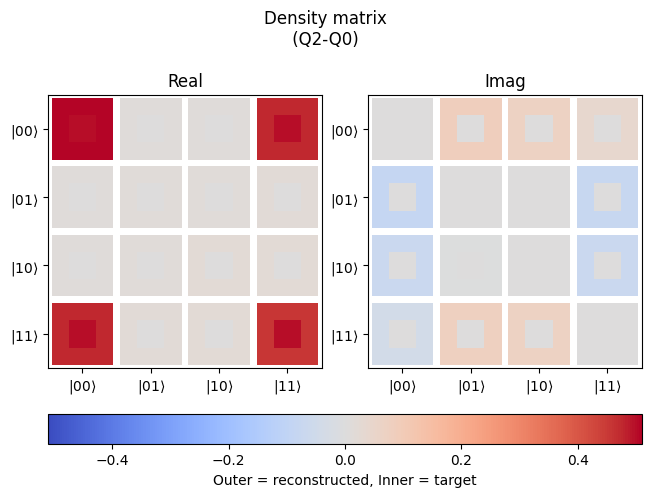

Automated tomography
[1]:
from nqct.utils.QuantumSession import QuantumSession
api_key = input('Enter API Key') #<---PASTE_API_KEY_HERE instead of the input(...)
qs = QuantumSession(api_key=api_key, storage_path='temp/')
qs.list_backends();
#Copy over the desired backend from the given list
qs.select_backend('quantware_soprano_d2')
| Name | Backend ID | Qubits | |
|---|---|---|---|
| 0 | Qiskit Aer Simulator | aer_simulator | 5 |
| 1 | QuantWare Soprano D2 | quantware_soprano_d2 | 7 |
There is a utility to automatically generate the measurements required to perform tomography on a given state. The QASM script just has the commands required to create the state. The utility automatically adds the required headers and qubit/bit declarations and the different tomography pulses and measurement operations. The resulting measurements are stored in a bit register of size \(N\cdot4^N\) for \(N\) qubits, where the entries corresponding to the tomography measurements:
The register
cis split into groups ofNwhere they are the individual qubit measurements for a given measurementEach group of
Ncorresponds to the archetypal tomography measurements of Pauli operators. For example, with 2 qubits, the sequence would be: II, IX, IY, IZ, XI, XX, XY, XZ, YI, …, ZY, ZZ (16 measurements in this case).
So let’s take a simple example with a 2-qubit Bell state (uncomment the print statement to view the generated script):
[2]:
from sqdtoolz.Utilities.DataDensityMatrix import DataDensityMatrix
my_script = r"""
reset q;
h q[0];
cx q[0], q[1];
"""
my_script = DataDensityMatrix.generate_tomography_qasm(my_script, num_qubits=2, qasm_include="stdgates_transmon_fixed_coupler.inc")
qs.set_qasm(my_script)
# print(my_script)
Set the mapping of the physical qubits to which to make this sample Bell state (using physical qubits on control and target being 2 and 0):
[3]:
qs.set_qreg_physical_mapping({('q',0):2, ('q',1):0})
# qs.validate()
[4]:
qs.set_acquisition_type('DISCRIMINATION')
qs.set_averaging_type('SingleShotCounts')
qs.set_num_shots(1024)
qs.set_shot_repeat(1)
Execute the circuit:
[5]:
leRes = qs.run()
Plot the results, while extracting the purity and fidelity (use plot3D for the cityscape plots):
[6]:
import numpy as np
ddm = DataDensityMatrix.fromDataViewer(leRes, use_readout_correction=True)
purity = ddm.get_purity()
fidelity = ddm.get_fidelity_pure_state(np.array([1,0,0,1])/np.sqrt(2))
ddm.plot2D(np.array([1,0,0,1])/np.sqrt(2))
print(f"Purity={purity*100:.3g}%\nFidelity={fidelity*100:.3g}%")
Purity=97.1%
Fidelity=95.7%
